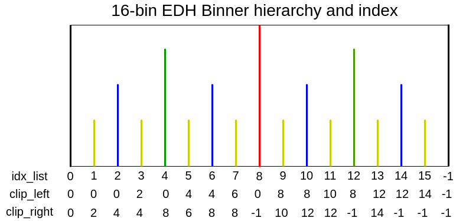

SPCSim.sensors package
Submodules
SPCSim.sensors.dtof module
- class SPCSim.sensors.dtof.BaseDtofSPC(Nr, Nc, N_pulses, device, N_tbins, seed=0)[source]
Bases:
objectBase class for direct time-of-flight single-photon cameras.
The capture method needs to be written for each of the inheriting classes.
- capture(phi_bar)[source]
Method needs to be implemented for inheriting class
Ensure the output to be a dictionary for future compatibility. Check inheriting classes for examples.
- Parameters:
phi_bar (torch.tensor) – Average incident photon flux tensor of shape (Nr, Nc, N_tbins)
- Raises:
NotImplementedError – This is a base class method which needs to be implemented for each inheriting class.
- sim_poisson_process(phi_bar)[source]
Method to simulate arriving photons from average incident photon flux.
Note
The sim_poisson_process method of BaseDtofSPC takes input as phi_bar (the average probability of incident photons in each bin) and applies the following operation
hist = torch.poisson(phi_bar).to(device = self.device, dtype = torch.bool)*1. It is important to note that the once the per bin probability of detecting a photon increases above 1 or 1.3, almost all bins detect a photon hence the output vector hist is always a vector of all ones. Hence increasing the total photon flux above 1.3 photons per bin results in the same values of hist no mater how high the flux is. This is important to note when performing experiments for high-photon flux scenarios. It is also important to note that the current version of this method does not consider the effect of dead time hence you do not see the distortions you may expect to see in high-photon flux regime (as you deviate away from the 5% flux rule [1] the simulated data will not match with the real sensor data as the dead time distortion is not modeled)Reference
[1] O’Connor, D.V.O., Phillips, D., “Time-correlated Single Photon Counting”, Academic Press, London, 1984
- class SPCSim.sensors.dtof.BaseEDHSPC(Nr, Nc, N_pulses, device, N_tbins, N_edhbins, seed=0)[source]
Bases:
BaseDtofSPCThis SPC class simulates photon measurements and captures them in form of equi-depth (ED) histograms.
Unlike EWHSPCs the EDHSPCs divide the laser time period such that the (depth) total counts per bin is equal hence ED histogram bins are mostly unequal in width.
Note
The term depth in equi-depth histograms refers to the count/height of the bin indicating that ED histogram bins have equal height. The term depth is not supposed to be confused with the scene depth. Hence in the code distance is used instead of depth to indicate how far objects are in the scene.
- capture(phi_bar)[source]
Method to generate SPC data for average incident photon flux (phi_bar) for given number of laser cycles and other SPC intrinsic parameters.
- Parameters:
phi_bar (torch.tensor) – Average incident photon flux tensor of shape (Nr, Nc, N_tbins)
- Returns:
Dictionary containing ED histogram for detected photons and the average incident photons flux and corresponding EW histogram tensor
- Return type:
captured_data (dictionary)
- ewh2edh(ewh_data)[source]
Method to compute equi-depth histogram from equi-width histogram.
- Parameters:
ewh_data (torch.tensor) – Equi-width histogram tensor of shape (Nr, Nc, N_tbins)
- Returns:
Oracle equi-depth histogram tensor of shape (Nr, Nc, N_tbins)
- Return type:
edh_bins (torch.tensor)
- get_ts_from_hist(hist)[source]
Method to convert one-hot encoded photon detection vectors to photon time stamp vectors
- Parameters:
hist (torch.tensor) – Input one-hot encoded photon detection cube where hist[n,m,k] = 1 if a photon is detected in the
column (kth time bin for pixel in the nth row and mth)
- Returns:
Time stamp tensor of the same size as hist. ts[n,m,k] = k if hist[n,m,k] = 1 else =0 hist (torch.tensor): Input one-hot encoded photon detection cube.
- Return type:
ts (torch.tensor)
- class SPCSim.sensors.dtof.BaseEWHSPC(Nr, Nc, N_pulses, device, N_tbins, N_ewhbins, seed=0)[source]
Bases:
BaseDtofSPCThis SPC class simulates photon measurements and captures them in form of equi-width (EW) histograms.
EW histograms divide the laser time period into bins of equal widths and store the count of photon timestamps incident in respective bin. In idea scenarios the bin with highest counts is most likely to contain the signal peak.
- capture(phi_bar)[source]
Method to generate SPC data for average incident photon flux (phi_bar) for given number of laser cycles and other SPC intrinsic parameters.
- Parameters:
phi_bar (torch.tensor) – Average incident photon flux tensor of shape (Nr, Nc, N_tbins)
- Returns:
Dictionary containing EW histogram tensor
- Return type:
captured_data (dictionary)
- class SPCSim.sensors.dtof.HEDHBaseClass(Nr, Nc, N_pulses, device, N_tbins, N_edhbins, seed=0, save_traj=True, pix_r=0, pix_c=0, step_params={})[source]
Bases:
BaseEDHSPCBase class for hierarchical EDH
- apply_edh_step()[source]
Method to apply the computed step size to update the control values of respective binners.
For the HEDHSPCs it also ensures that the child boundaries do not cross over the parent boundaries.
- capture(phi_bar)[source]
Method to generate SPC data for average incident photon flux (phi_bar) for given number of laser cycles and other SPC intrinsic parameters.
- Parameters:
phi_bar (torch.tensor) – Average incident photon flux tensor of shape (Nr, Nc, N_tbins)
- Returns:
Dictionary containing ED histogram for detected photons, the oracle and ground truth ED histograms, corresponding EW histogram tensor and list of binner control values tracked by binner at each laser cycle for a pixel at
(self.pix_r, self.pix_c).- Return type:
captured_data (dictionary)
- init_edh_params()[source]
This method is called in the constructor and ensures initializing all the necessary common tensors that will be updated later. Initializing the tensors in the constructor eliminates the need to construct them at each laser cycle hence reduces simulation time.
- reset_edh()[source]
This method is called once in the constructor to decide the initialization scheme of the binners at the first laser cycle.
Note
Valid-mask based initialization for binners at later stages is handled by
update_delta_mask()
- set_decay_schedule()[source]
Method to set the stepping schedule for the binners.
The
`decay_schedule`contains a list of decay values for each laser cycle. Hence its length is equal to the number of laser cycles. A simple example of could be to overwrite this method with the following definitiondef set_decay_schedule(self): self.decay_schedule = np.ones(self.N_pulses).tolist()
- set_idx_lists()[source]
Method to set the binner indices for further operations. Reference image for 16-bin EDH
Note
For 16-bin HEDH, we track 15 boundaries and two extra boundaries on index 0 and -1 are the extreme boundaries. Since we do not perform any updates to the boundaries we do not pass the extreme boundaries for any edh update step.
- update_delta()[source]
Method to update the difference between early photons (
pe) and late photons (pl). The delta value is used to compute the binner update step.For a basic binner, the sign of delta is used to compute the binner update step as
step[k+1] = sign(delta[k]).
- update_delta_mask()[source]
Method to apply custom temporal masks to activate or deactivate specific binners.
Example to ensure all boundaries are activated for all the laser cycles
def update_delta_mask(self): self.delta_mask = self.delta_mask*0 + 1
- update_edh(hist)[source]
Method to compute and apply the update step to the binners
This method obtains the decay value for the specific cycle (cy_cnt), updates the delta_mask to choose valid binners to update at (cy_cnt), generates timestamp vectors from photon detection vectors, uses the timestamp vectors to compute before and after photons for each binner, compute the delta (late photons - early photons)/total photons, computer the update step for each binner and apply the update step to corresponding binners.
- update_pa_pb_kp(hist, ts)[source]
Method to compute the early and late photon streams for current control value of each binner in a vectorized form.
Refer the following figure from [2] to understand how the binner hardware splits the photon stream into early and late photons.

- Parameters:
hist (torch.tensor) – Input one-hot encoded photon detection cube.
ts (torch.tensor) – Time stamp tensor of the same size as hist. ts[n,m,k] = k if hist[n,m,k] = 1 else =0
References
[2] A. Ingle and D. Maier, “Count-Free Single-Photon 3D Imaging with Race Logic,” in IEEE Transactions on Pattern Analysis and Machine Intelligence, doi: 10.1109/TPAMI.2023.3302822.
- class SPCSim.sensors.dtof.PEDHBaseClass(Nr, Nc, N_pulses, device, N_tbins, N_edhbins, seed=0, save_traj=True, pix_r=0, pix_c=0, step_params={})[source]
Bases:
BaseEDHSPC- apply_edh_step()[source]
Method to apply the computed step size to update the control values of respective binners.
- capture(phi_bar)[source]
Method to generate SPC data for average incident photon flux (phi_bar) for given number of laser cycles and other SPC intrinsic parameters.
- Parameters:
phi_bar (torch.tensor) – Average incident photon flux tensor of shape (Nr, Nc, N_tbins)
- Returns:
Dictionary containing ED histogram for detected photons, the oracle and ground truth ED histograms, corresponding EW histogram tensor and list of binner control values tracked by binner at each laser cycle for a pixel at
(self.pix_r, self.pix_c).- Return type:
captured_data (dictionary)
- init_edh_params()[source]
This method is called in the constructor and ensures initializing all the necessary common tensors that will be updated later. Initializing the tensors in the constructor eliminates the need to construct them at each laser cycle hence reduces simulation time.
- reset_edh()[source]
This method is called once in the constructor to decide the initialization scheme of the binners at the first laser cycle.
- set_decay_schedule()[source]
Method to set the stepping schedule for the binners.
The
`decay_schedule`contains a list of decay values for each laser cycle. Hence its length is equal to the number of laser cycles. A simple example of could be to overwrite this method with the following definitiondef set_decay_schedule(self): self.decay_schedule = np.ones(self.N_pulses).tolist()
- update_delta()[source]
Method to update the difference between early photons (
pe) and late photons (pl). The delta value is used to compute the binner update step. For proportional binners early and late photons are multiplied by respective quantile fractions for proportional stepping explained in [3].For a basic proportional binner delta is used to compute the binner update step as
step[n+1] = delta[n].References
[3] Sadekar, K., Maier, D., & Ingle, A. (2025). Single-Photon 3D Imaging with Equi-Depth Photon Histograms. In European Conference on Computer Vision (pp. 381-398). Springer, Cham.
- update_edh(hist)[source]
Method to compute and apply the update step to the binners
This method obtains the decay value for the specific cycle (cy_cnt), updates the delta_mask to choose valid binners to update at (cy_cnt), generates timestamp vectors from photon detection vectors, uses the timestamp vectors to compute before and after photons for each binner, compute the delta (late photons - early photons)/total photons, computer the update step for each binner and apply the update step to corresponding binners.
- update_pa_pb_kp(hist, ts)[source]
Method to compute the early and late photon streams for current control value of each binner in a vectorized form.
Refer HEDHBaseClass for more details about early and late photons
- Parameters:
hist (torch.tensor) – Input one-hot encoded photon detection cube.
ts (torch.tensor) – Time stamp tensor of the same size as hist. ts[n,m,k] = k if hist[n,m,k] = 1 else =0
- class SPCSim.sensors.dtof.PEDHOptimized(Nr, Nc, N_pulses, device, N_tbins, N_edhbins, seed=0, save_traj=True, pix_r=0, pix_c=0, step_params={})[source]
Bases:
PEDHBaseClass
- class SPCSim.sensors.dtof.RawSPC(Nr, Nc, N_pulses, device, N_tbins, N_output_ts, seed=0)[source]
Bases:
BaseDtofSPCThis SPC class simulates N_output_ts photon time stamp measurements for NrxNc pixels.
Either use the class with PerPixelLoader to simulate phi_bar data or pass transient from a dataset and capture all the timestamps for N_pulses laser cycles.
Note
For this class if the average signal+bkg photons per laser cycle exceed 1 then there is a high change that the we will run out of the N_output_ts timestamps even before we scan all the histogram bins.
- capture(phi_bar)[source]
Method to generate SPC data for average incident photon flux (phi_bar) for given number of laser cycles and other SPC intrinsic parameters.
- Parameters:
phi_bar (torch.tensor) – Average incident photon flux tensor of shape (Nr, Nc, N_tbins)
- Returns:
- Dictionary containing raw photon timestamps (
time_stamps) and corresponding EW histogram (
ewh) tensor
- Dictionary containing raw photon timestamps (
- Return type:
captured_data (dictionary)